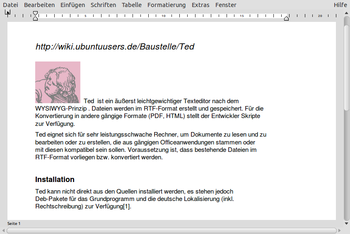
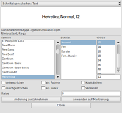

Ted
Dieser Artikel wurde für die folgenden Ubuntu-Versionen getestet:
Ubuntu 14.04 Trusty Tahr
Zum Verständnis dieses Artikels sind folgende Seiten hilfreich:
Ted  ist ein besonders leichtgewichtiges Programm zur Textverarbeitung nach dem WYSIWYG-Prinzip. Es kann in UNIX- oder Linux-Systemen zum Einsatz kommen. Dateien werden im RTF-Format erstellt und gespeichert, das von vielen Textverarbeitungsprogrammen (plattformunabhängig) verarbeitet werden kann. Speicherung in anderen Formaten ist möglich (TXT, PDF, HTML, EPUB u. a.).
ist ein besonders leichtgewichtiges Programm zur Textverarbeitung nach dem WYSIWYG-Prinzip. Es kann in UNIX- oder Linux-Systemen zum Einsatz kommen. Dateien werden im RTF-Format erstellt und gespeichert, das von vielen Textverarbeitungsprogrammen (plattformunabhängig) verarbeitet werden kann. Speicherung in anderen Formaten ist möglich (TXT, PDF, HTML, EPUB u. a.).
Ted kann auch auf sehr leistungsschwachen Rechner verwendet werden, um Dokumente zu lesen, zu bearbeiten oder zu erstellen, die aus gängigen Büroanwendungen stammen oder mit diesen kompatibel sein sollen. Voraussetzung ist, dass bestehende Dateien im RTF-Format vorliegen bzw. konvertiert werden.
Gegenüber einfachen Texteditoren bietet Ted die Möglichkeit der detaillierten Textformatierung. Im Vergleich mit gängigen Officeprogrammen "fehlen" dagegen viele Funktionen, die das Arbeiten bequemer machen (Formatvorlagen, automatische Silbentrennung, Seriendruck u.a.)
Installation¶
Ted kann nicht mehr aus den offiziellen Paketquellen installiert werden.
Fremdpakete¶
Es stehen jedoch DEB-Pakete  für das Grundprogramm und die deutschen Sprachdateien (inkl. Rechtschreibprüfung) zur Verfügung:
für das Grundprogramm und die deutschen Sprachdateien (inkl. Rechtschreibprüfung) zur Verfügung:
ted-VERSION-ARCHITEKTUR.deb
ted-de_DE-VERSION.all.deb
Hinweis!
Fremdpakete können das System gefährden.
Nach dem Herunterladen installiert man diese Pakete von Hand [1].
Bedienung¶
 
Nach Installation der Deb-Pakete kann Ted per Dash bzw. über den Menü-Eintrag "Büroanwendungen -> Ted rtf text processor" aufgerufen werden [3]. Die deutsche Rechtschreibprüfung steht unmittelbar zur Verfügung. Deutschsprachige Menüs werden jedoch nur angezeigt, wenn das Programm im Terminal [4] mit folgendem Befehl aufgerufen wird (Großschreibung beachten, vgl. auch Problemhandlung):
LANG=de_DE Ted
Die Benutzung des Programms ist menügesteuert und erschließt sich intuitiv. Per Rechtsklick auf das Eingabefeld öffnet sich das universale Formatierungsmenü, in dem alle Formatierungsoptionen ausgewählt und gesetzt werden können.
Die Einzugs- und Tabulatoreinstellungen eines Absatzes können kopiert und auf einen anderen Absatz übertragen werden.
Das englischsprachige Online-Handbuch steht auch lokal unter /usr/local/Ted/TedDocument-en_US.rtf zur Verfügung. Das deutschsprachige Handbuch  ist teilweise veraltet. Es kann - nach Installation des deutschen Sprachpakets - unter /usr/local/Ted/TedDocument-de_DE.rtf gefunden werden.
ist teilweise veraltet. Es kann - nach Installation des deutschen Sprachpakets - unter /usr/local/Ted/TedDocument-de_DE.rtf gefunden werden.
Ted konfigurieren¶
Um die Standardeinstellungen (Seitengröße, Seitenränder usw.) zu konfigurieren, kann im Benutzerverzeichnis eine Datei ~/.Ted.properties angelegt werden. Hier ein Beispiel mit gängigen Einstellungen:
Ted.unit: cm Ted.paper: a4 Ted.leftMargin: 2.5cm Ted.rightMargin: 2.5cm Ted.topMargin: 3.0cm Ted.bottomMargin: 3.0cm Ted.magnification: 1.3 Ted.documentFileName: /usr/local/Ted/TedDocument-de_DE.rtf
Mögliche Einträge und die entsprechenden Werte sind im Handbuch im Abschnitt Configuring Ted aufgeführt.
Vorhandene Dateien nach *.rtf konvertieren¶
Vorhandene Office-Dokumente müssen in der Regel konvertiert werden, um mit Ted gelesen und bearbeitet zu werden. Falls Libreoffice-Writer oder Abiword zur Verfügung stehen, können mehrere Dateien leicht im Terminal konvertiert werden. Zum Beispiel wandelt der folgende Befehl alle .odt-Dateien eines Verzeichnisses nach .rtf um:
libreoffice --nologo --headless --convert-to rtf *.odt
Dabei muss Libreoffice geschlossen sein.
Im folgenden Beispiel werden mit Hilfe von Abiword .doc-Dateien eines Verzeichnisses nach .rtf konvertiert. (Abiword braucht vorher nicht geschlossen zu werden).
abiword -t rtf *.doc
Näheres in den Manpages der Programme.
Problembehebung¶
Fehlermeldung beim Speichern¶
Nach dem ersten Speichern einer Datei kann bei erneutem Speichern die Fehlermeldungen "Dokument kann nicht geschrieben werden" erscheinen. Die Datei muss dann unter einem anderen Namen gespeichert werden. Um das zu vermeiden, muss die Datei einmal geschlossen und neu geöffnet werden.
Start mit deutschsprachigen Menüs¶
Wer den oben beschriebenen Start über ein Terminalfenster vereinfachen will, kann die Datei /usr/share/applications/Ted.desktop mit Root-Rechten [5] öffnen und den Eintrag Exec= folgendermaßen anpassen:
Exec=sh -c "LANG=de_DE Ted %f"
Die Datei kann auch als ~/.local/share/applications/Ted.desktop gespeichert werden.
Einstellungen aus .Ted.properties werden unvollständig übernommen¶
Beim Start des Programms mit LANG=de_DE Ted werden evtl. nicht alle Werte aus der Konfigurationsdatei ~/.Ted.properties übernommen. Hier kann es helfen, die Datei nach ~/Ted umzubenennen oder das Programm mit dem Befehl Ted aufzurufen und mit englischsprachigen Menüs zu verwenden.
- Erstellt mit Inyoka
-
 2004 – 2017 ubuntuusers.de • Einige Rechte vorbehalten
2004 – 2017 ubuntuusers.de • Einige Rechte vorbehalten
Lizenz • Kontakt • Datenschutz • Impressum • Serverstatus -
Serverhousing gespendet von